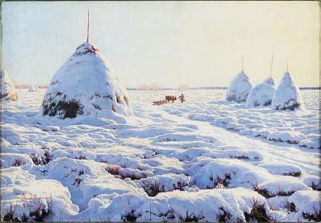
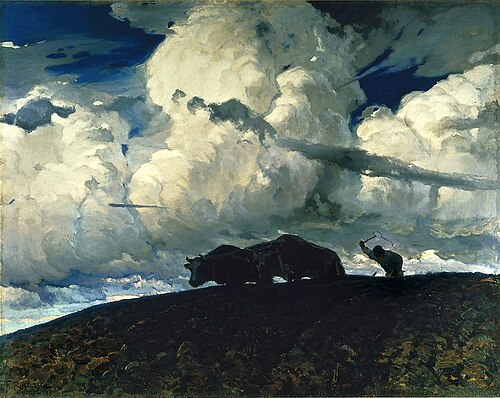
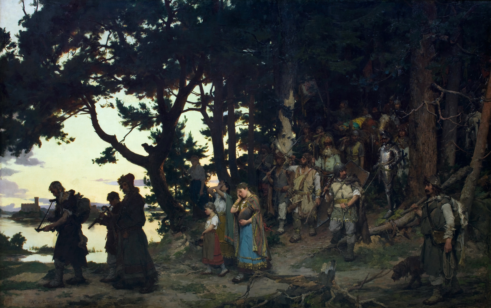
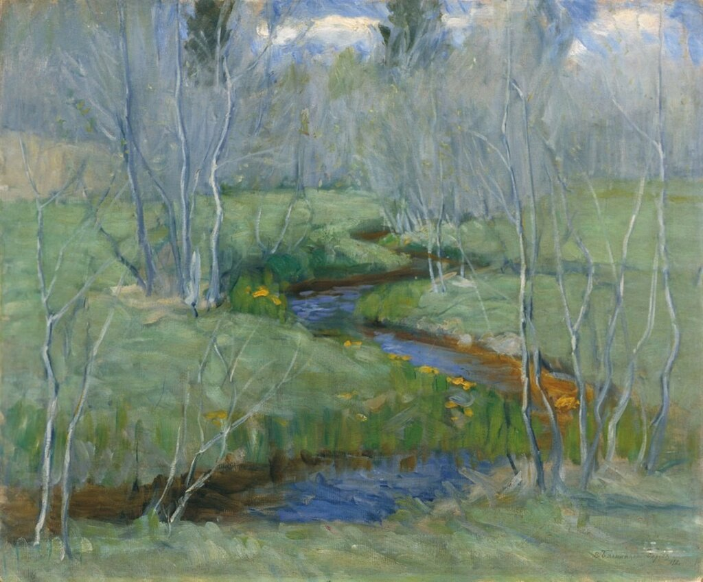

Живопись Беларуси XX века
XX век стал для белорусской живописи временем радикальных перемен. В начале столетия художники осваивали новые направления: импрессионизм, символизм, модерн. После революции 1917 года и образования БССР живопись развивалась в рамках советской идеологической программы, но при этом сохраняла национальные традиции. В годы Великой Отечественной войны художники создавали произведения, проникнутые патриотизмом и болью за родную землю. В послевоенные десятилетия белорусская живопись достигла значительных успехов в портрете, пейзаже и исторической картине.
Генрих Вейсенгоф (1859-1922)
Реализм, пейзаж

Снег (1894)
Генрих Вейсенгоф родился в 1859 году в имении Пакревны Ковенской губернии. Его отец был писателем и участником восстания 1863 года, за что был сослан в Сибирь. Детство будущего художника прошло в ссылке. Первые навыки живописи получил у ссыльного художника Люциана Крашневского. В 1874 году семья вернулась на родину, и Вейсенгоф поступил в школу живописи Герсона в Варшаве, затем учился в Петербургской академии художеств. С 1880-х годов жил в имении Русаковичи Игуменского уезда Минской губернии.
Связь с историей
Вейсенгоф работал на рубеже XIX-XX веков, когда белорусская культура переживала сложный период. Его пейзажи «Снег» (1894), «Могилки в Русаковичах» (1889), «Глушь» передают не только красоту родной природы, но и социальные проблемы белорусской деревни. Картина «Снег» в 1888 году была отмечена премией на выставке в Петербурге, а в 1900 году на выставке в Париже ей был присуждён серебряный медаль. Художник активно участвовал в выставках в Минске и Вильне, поддерживал национальное движение. В 1917 году эмигрировал, умер в 1922 году.
Основные произведения:
- Снег (1894)
- Могилки в Русаковичах (1889)
- Глушь
- Старый двор Русаковичи
- Водяные лилии
- Эскиз диплома сельскохозяйственной выставки в Минске
Фердинанд Рущиц (1870-1936)
Реализм, пейзаж

Земля (1898)
Фердинанд Рущиц родился в 1870 году в имении Богданово Ошмянского уезда Виленской губернии в семье обедневшего шляхтича. Детство и юность прошли в Минске, где он окончил гимназию и получил первые навыки живописи у К. Ермакова. Затем поступил в Петербургскую академию художеств, учился у Шишкина и Куинджи. В 1897 году окончил академию и поселился в родовом имении Богданово, где работал до конца жизни. В 1904-1908 годах был профессором Краковской академии искусств.
Связь с историей
Рущиц работал в эпоху, когда белорусские земли находились в составе Российской империи, а после 1917 года оказались разделены. Его пейзажи «Земля» (1898), «В мир» (1901), «Старая мельница» (1899), «Эмигранты» (1902) - это размышления о судьбе белорусского крестьянина, о его тяжёлом труде и вынужденном уходе с родной земли. В 1917 году Рущиц не смог понять революционных событий, остался в Западной Беларуси, участвовал в восстановлении Виленского университета. Умер в 1936 году в Богданове.
Основные произведения:
- Земля (1898)
- В мир (1901)
- Старая мельница (1899)
- Эмигранты (1902)
- Пустошь
- Зима
Казимир Альхимович (1840-1917)
Реализм, исторический жанр, бытовой жанр

Похороны Гедимина (1888)
Казимир Альхимович родился в 1840 году в селе Домброво Лидского уезда Гродненской губернии в семье небогатого белорусского шляхтича. Учился в Виленской гимназии, затем в Варшаве в рисовальной школе Герсона, в Мюнхенской академии художеств и в Париже. Участвовал в восстании 1863 года, за что был выслан в Сибирь, где находился до 1869 года. С 1870-х годов жил в Варшаве, но часто приезжал на родину, где собирал материал для своих произведений.
Связь с историей
Альхимович работал в эпоху, когда после восстания 1863 года белорусская культура подвергалась давлению, а национальная память пыталась сохранить историческое прошлое. Его картины «Похороны Гедимина» (1888), «Защита Ольштына» (1880-е), «Языческие жрецы» - это размышления о героическом прошлом белорусского народа. Картина «Похороны Гедимина» экспонировалась на выставках в Варшаве, Петербурге, Львове и Сан-Франциско, где была удостоена высших наград. Художник до конца дней сохранял связь с родиной и говорил на белорусском языке.
Основные произведения:
- Похороны Гедимина (1888)
- Защита Ольштына
- Языческие жрецы
- Похороны на Урале
- На этапе
- Жниво
Витольд Бялыницкий-Бируля (1872-1957)
Реализм, пейзаж

Весна (1910-е)
Витольд Бялыницкий-Бируля родился в 1872 году в имении Крынки Могилёвской губернии. Учился в Киевской рисовальной школе, затем в Московском училище живописи, ваяния и зодчества у Левитана и Поленова. С 1900-х годов жил в Москве, но часто приезжал в Беларусь, где создал множество пейзажей. В 1904 году получил звание академика живописи. После революции работал в Москве, но не порывал связей с родиной.
Связь с историей
Бялыницкий-Бируля работал в эпоху, когда белорусская живопись осваивала новые художественные направления. Его пейзажи «Весна», «Лёд прошёл», «Зимний сон» - это лирические размышления о родной природе, её красоте и изменчивости. Художник создал более 2000 произведений, многие из которых хранятся в музеях Беларуси, России и других стран. В 1947 году ему было присвоено звание народного художника БССР. Его творчество стало мостом между дореволюционной и советской живописью.
Основные произведения:
- Весна
- Лёд прошёл
- Зимний сон
- Весенний день
- На берегу озера